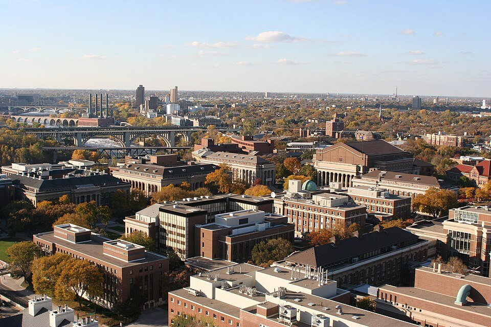

Local Information
The venue, getting to Minneapolis, where to stay, and what to see while you are here.
Venue
Kenneth H. Keller Hall
200 Union Street SE, Minneapolis, MN 55455
Keller Hall is on the University of Minnesota’s East Bank campus, a short walk from the East Bank station on the METRO Green Line.
Open in Google Maps · UMN campus map
Nearby public parking: Washington Avenue Ramp, Church Street Garage, and University Avenue Ramp.


Getting here
Fly into Minneapolis–Saint Paul International Airport (MSP), a major hub with direct flights across North America and to Europe and Asia.
Light rail (about 35 minutes)
From either terminal, take the METRO Blue Line toward downtown Minneapolis and get off at U.S. Bank Stadium station. Transfer to the Green Line toward St. Paul and get off at East Bank station, a short walk from Keller Hall. A ride costs $2, and an all-day pass is $4. Buy tickets at the station machines or in the Metro Transit app. See Metro Transit for schedules.
Taxi or rideshare (about 20–30 minutes)
Uber and Lyft pick up in the parking ramps at both terminals, and taxis are also available. Expect roughly $20–30 by rideshare and $40–50 by taxi, depending on demand.
Late May is usually pleasant, with daytime highs in the 70s °F (low 20s °C) and cool evenings. Bring a light jacket.
Where to stay
These hotels are close to campus. Information on any group rate will be posted here. Downtown Minneapolis hotels are also a short Green Line ride away.
Graduate by Hilton Minneapolis
On the East Bank campus, a short walk to the Green Line.
Hilton Garden Inn Minneapolis University Area
Next to campus, near the Stadium Village Green Line station.
Hampton Inn & Suites Minneapolis University Area
Near the Prospect Park Green Line station, a few stops from East Bank.
Home2 Suites by Hilton Minneapolis University Area
Extended-stay suites next to the Hampton Inn, near the Prospect Park Green Line station.
Exploring the Twin Cities
A few favorites, most of them free and easy to reach by light rail or a short ride from campus.
Weisman Art Museum
On campus, overlooking the Mississippi River, in a striking stainless-steel building by Frank Gehry. Free admission.
Stone Arch Bridge & Mill City Museum
A historic 1883 pedestrian bridge with views of St. Anthony Falls. At the bridge's west end, the Mill City Museum sits in the ruins of what was once the world’s largest flour mill.
Minneapolis Sculpture Garden
Home of the Spoonbridge and Cherry and more than 60 other works, next to the Walker Art Center. Free and open daily.
Minneapolis Institute of Art
An encyclopedic art collection spanning thousands of years and cultures. General admission is free.
Minnehaha Falls
A 53-foot waterfall in a wooded creek gorge, close to the 50th St/Minnehaha Park station on the Blue Line.
Bde Maka Ska & the Chain of Lakes
Paved walking and biking loops around city lakes, with beaches and boat and bike rentals.
Como Park Zoo & Conservatory
A zoo and Victorian-style glass conservatory in St. Paul. Free admission.
Mall of America
One of the largest shopping malls in North America, at the southern end of the Blue Line near the airport.